请将手机横屏观看
This presentation is designed for landscape mode.
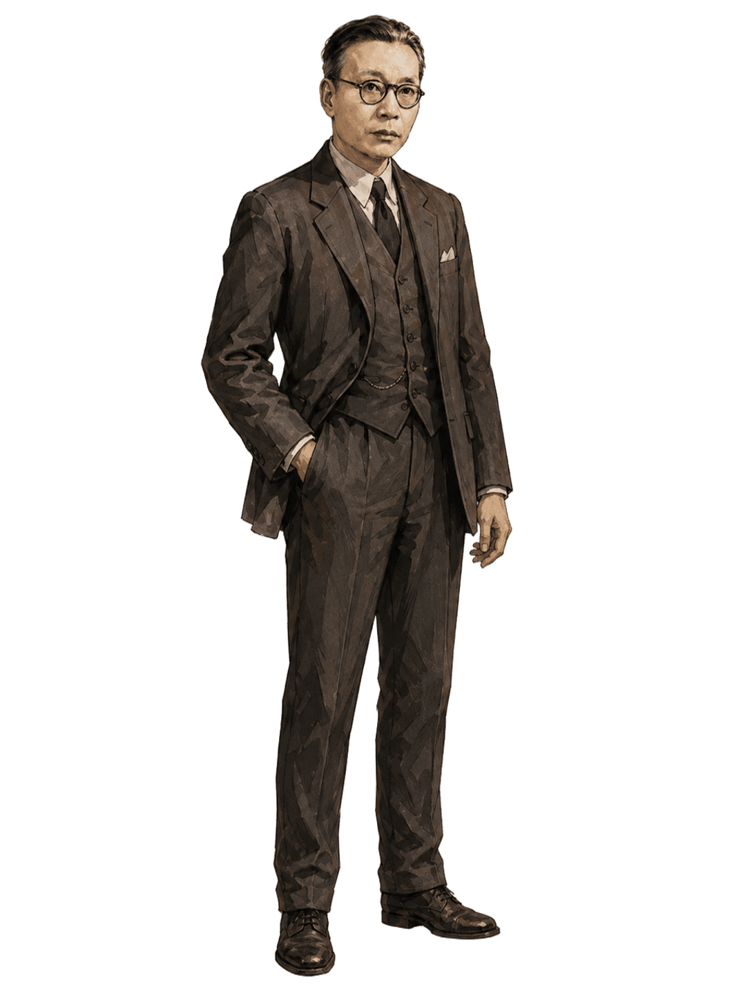
本报告基于刘新文和祝瑞的未发表文章 Chin Yueh-Lin on Carroll’s Paradox: Inference, Russell, and Logical Realism。 我们并不主张金岳霖是当代逻辑规范性理论的先驱，而是试图重构他在二十世纪六十年代如何围绕“推论何以客观有效”这一问题，展开并论证自己的逻辑实在论。 由此，报告也希望为理解金岳霖的学术思想提供一个新的视角。
阿基里斯
你已经接受：$\varphi,\quad \varphi \rightarrow \psi$ 那么由 modus ponens，所以：$\psi$
阿基里斯
好，那我们把这条推理原则也写成前提： $R_0:\bigl(\varphi \wedge (\varphi \rightarrow \psi)\bigr) \rightarrow \psi$
现在你总该接受 $\psi$ 了吧？
阿基里斯
那就再加入一条原则： $R_1:\bigl(\varphi \wedge (\varphi \rightarrow \psi) \wedge R_0\bigr) \rightarrow \psi$
这样总可以推出 $\psi$ 了吧？
乌龟
我可以接受 $\varphi$，也可以接受 $\varphi \rightarrow \psi$。
但我为什么必须接受 $\psi$？
乌龟
我也可以再多接受一个前提 $R_0$。
但我为什么必须从$\varphi,\quad \varphi \rightarrow \psi,\quad R_0$ 推进到 $\psi$？
乌龟
我也可以再多接受一个前提 $R_1$。
但我为什么必须从这些前提出发，实际走到 $\psi$？
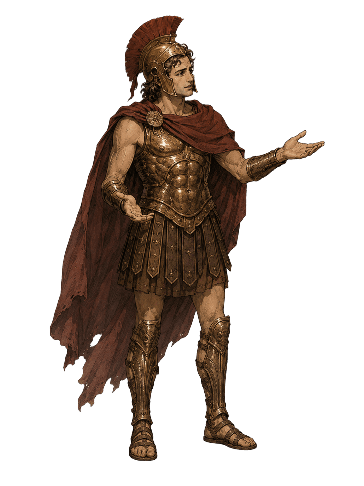
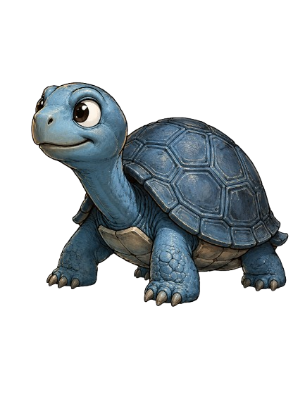
把“所以”问题放在推论、断定和实际思想活动中讨论。
周礼全担心“阶级性”等表述危及形式逻辑的普遍性。
回应周礼全：区分逻辑蕴涵和实际推论
系统地批评罗素，提出并捍卫自身的实在论立场
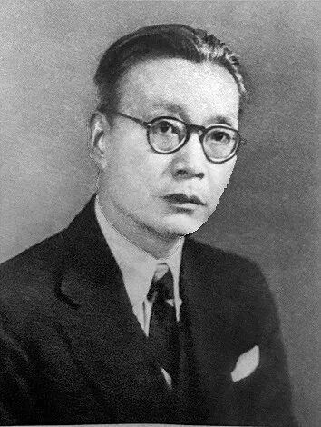
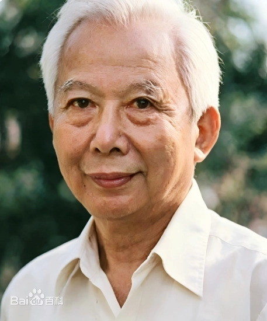
命题：可真可假的内容，不等同于断定行为。
断定：主体承认某命题为真；具有认知维度。
蕴涵：命题之间的客观形式关系，不靠再次断定而成立。
推论 / “所以”：主体以已断定的命题为前提，向结论实际过渡的认知活动；它以蕴涵为形式根据，但不是蕴涵本身。
乌龟的错误在于把使推论成立的蕴涵关系不断前提化，仿佛每一次推论都还需要一个新的断定前提。
Russell, The Principles of Mathematics, §38:
When we say therefore, we state a relation which can only hold between asserted propositions, and which thus differs from implication. Wherever therefore occurs, the hypothesis may be dropped, and the conclusion asserted by itself. This seems to be the first step in answering Lewis Carroll's puzzle.
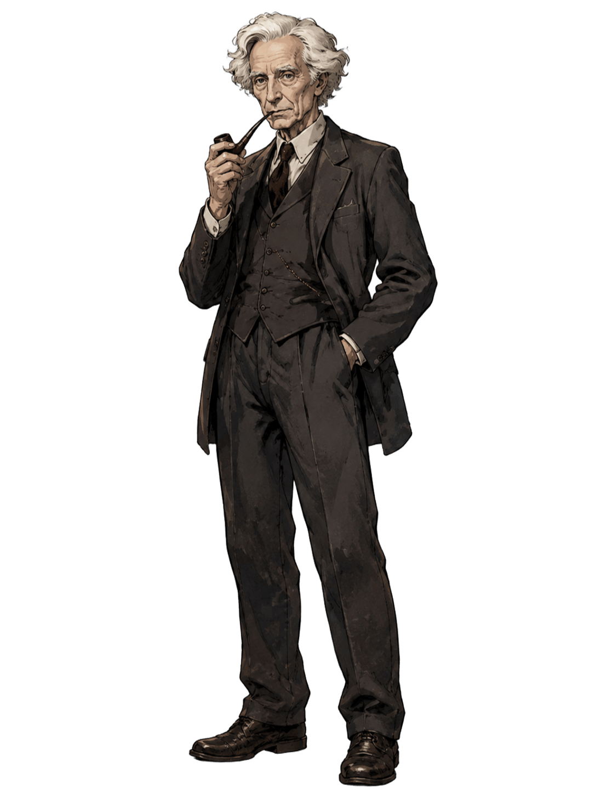
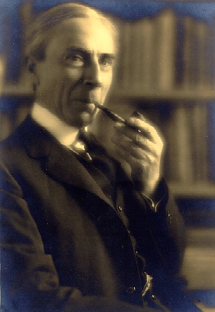
早期罗素：逻辑关系有实在性。 命题可以不被断定而仍然为真或为假；蕴涵是命题之间的客观关系；推理则是主体在已断定前提的基础上向结论过渡。这一框架使罗素能够回应卡罗尔式的无穷后退：推理不能当作蕴涵关系作为一个前提被加入。
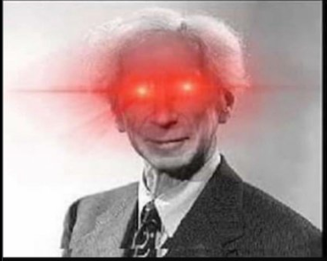
后期罗素：在认识论和逻辑构造纲领中，罗素强调用已知材料的逻辑构造来替代对未知实体的推论。物理对象、外部世界和常识对象不再首先作为被推论到的实在对象，而被理解为由感觉或中性材料构成的逻辑结构。 “Wherever possible, substitute constructions out of known entities for inferences to unknown entities”
金岳霖思想中的两个方向：他先借早期罗素的区分回应卡罗尔式后退。当问题由“推理如何受规范”转向“对象是否被构造消解”时，金岳霖用同一个实在论关切反过来批评罗素后期哲学。但因此，金岳霖实际的论证需要同时应对两个方向的压力
反对乌龟式怀疑论: 如果蕴涵关系只有在被进一步断定为前提之后才有规范力，那么推理永远不能真正开始。金岳霖必须维护蕴涵关系对推论的客观约束。如果 $A \wedge B$ 确实蕴涵 $Z$，那么这个关系独立于阿基里斯或乌龟是否把它表述为另一个命题而成立。
反对罗素式构造论： 如果对客观对象的推论被感觉材料的逻辑构造所替代，那么认识与对象之间的实在论联系就会被削弱。推理会被看成抽象个体认识的行为，而不考虑其所处的现实历史条件和认知的客观处境。推理和认识都是主体活动，不能封闭在主体心理或主观材料之中。
金岳霖注意到，在前提本身这一侧也可以产生类似倒退。如果乌龟不仅拒绝从A和B过渡到Z，甚至可以拒绝承认A且B（$A \wedge B $）为真，那么阿基里斯必须再加上一个命题进入前提: $A, B \therefore A \wedge B $,而乌龟一样可以拒绝这个命题。
卡罗尔式后退的关键，是误导读者认为前提不充分，实际问题则是把规则的规范力不断改写为表示蕴涵的额外前提。金岳霖接受一个罗素式区分：蕴涵关系与实际推论不同。蕴涵关系不因为被断定才成立；实际推论则是主体在承认前提后向结论过渡的认知活动。因此，推论的正当性不能靠无限增加前提来保证。它依赖于前提与结论之间已有的客观逻辑关系，也依赖于主体实际执行推论时对这种关系的把握。
推理是主体的认知活动；但推理的正当性受客观逻辑关系约束。
《罗素哲学》指出：罗素没有具体说明其构造论针对地是演绎与非演绎推理；金岳霖意识到两种可能性，因此分别进行回应。
演绎推理（推演）无须构造: 前提与结论之间受到客观的蕴含形式关系保障，结论总是被前提所包含。而且，即使结论通过前提的材料构造得出，也不见得比推演本身可靠。
非演绎推理（推论）如果通过逻辑构造则前提的材料不足：小孩看到闪电捂耳朵，小孩的动作说明小孩做了推理，但如何通过闪电构造雷声？这就需要在认识论中加入新的内容来处理现实对象（雷声）。
按金岳霖的诊断，罗素“想把认识论做成演绎系统”。问题在于：为了弥补构造能力的不足，罗素引入“感觉材料”，并用类似演绎的方法来构造客观对象。这样一来，认知与客观实体之间的关系便被主观材料的构造所中介，推论与科学认识的客观性也随之受到削弱。
英文短文 On the Essence of Russell's Neutral Monism 提出：如果心灵和物质都被还原为中性材料的构造，客观对象的独立实在性就会被削弱。
金岳霖反对的还原:
层级不能互相取消: 微观物理描述可以改变我们说明对象的方式，但不能取消宏观对象在经验实践和科学实验中的实在地位。如果用桌子的微观描述，比如用粒子、场或波来否认普通桌子的实在性，或者用由感觉材料构成的物理对象构造来否认那些对象的独立存在，那么科学抽象就被转化为形而上学还原。
物理学依据: 金岳霖引用爱因斯坦为自己的实在论辩护：科学认识依赖于一个独立于心灵的世界，尽管这种认识始终由历史地处于一定情境中的理论、仪器和实践所中介。物理理论可以改变我们对那个世界的说明，但不能在不破坏自身实验基础的情况下取消那个世界的独立实在性。
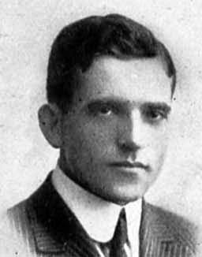
As a theory of the formal structure of "real" objects (configurations of objects), logic is anchored in reality; as a theory of the formal structure of our thought of objects, logic is anchored in the mind.
金岳霖和Sher都拒绝把逻辑单独奠基于心灵或单独奠基于世界，而必须兼而有之。不同在于，Sher 依赖 Tarski 传统和模型论工具； 金岳霖则提出一种更厚重但也更纲领性的逻辑实在论。
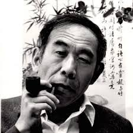
王浩在 Memories related to Professor Jin Yuelin 中评论道：金岳霖思想中存在“两种理想”的张力：一方面是前期新实在论系统，另一方面是后期处于辩证唯物主义语汇中的哲学写作。
周礼全在《罗素哲学》序言对金岳霖的罗素研究评价具有双重性
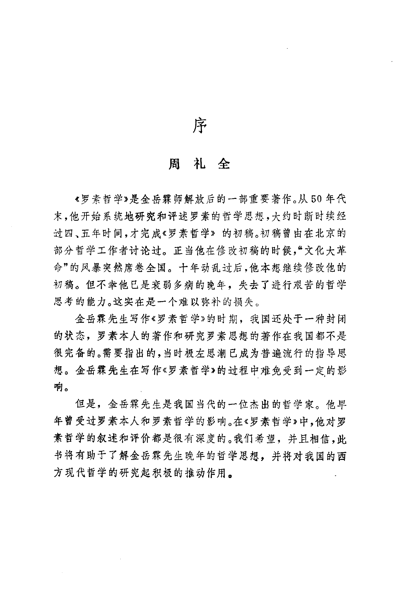
近期英文的金岳霖研究中，也出现了对金岳霖哲学不成熟的评价。
金岳霖的形式、语汇和时代处境确有变化；但他对逻辑、推论和知识对象客观性的关切并未简单断裂。他其实是在不同语境中持续地为自己的逻辑实在论寻找合适的表达方式。
Carroll, Lewis. 1895. “What the Tortoise Said to Achilles.” Mind, New Series 4(14): 278–280.
Marion, Mathieu. 2016. “Lessons from Lewis Carroll's Paradox of Inference.” The Carrollian 28: 48–75.
Engel, Pascal. 2016. “The Philosophical Significance of Carroll’s Regress.” The Carrollian 28: 84–110.
Imholtz, Clare and Amirouche Moktefi. 2016. “What the Tortoise Said to Achilles: A Selective Bibliography.” The Carrollian 28: 125–136.
Russell, Bertrand. 1903. The Principles of Mathematics. Cambridge: Cambridge University Press.
Russell, Bertrand. 1914. Our Knowledge of the External World. Chicago: Open Court.
Russell, Bertrand. 1921. The Analysis of Mind. London: George Allen & Unwin.
Linsky, Bernard. 2012. “Logical Constructions.” In The Stanford Encyclopedia of Philosophy, Fall 2012 ed.
Chin, Yueh-Lin. 1927. “Prolegomena.” The Philosophical Review 36(1): 27–59.
Jin, Yuelin. 1960. 《论“所以”》. 收入《金岳霖文集》相关卷册。
Zhou, Liquan. 1961. “Some of the Main Problems in ‘On Therefore’.” Zhexue Yanjiu 1961: 12–31.
Jin, Yuelin. 1962. “On the Class Characteristics and Necessity of the Inference Form.” Zhexue Yanjiu 1962: 69–83.
Jin, Yuelin. 1988. 《罗素哲学》. Shanghai: Shanghai People's Publishing House. Completed 1965.
Jin, Yuelin. 1995. “On the Essence of Russell's Neutral Monism.” In Jin Yuelin Wenji, vol. 4, 431–447. Lanzhou: Gansu People's Publishing House.
Sher, Gila. 2011. “Is Logic in the Mind or in the World?” Synthese 181: 353–365.
Sher, Gila. 2013. “The Foundational Problem of Logic.” Bulletin of Symbolic Logic 19: 145–198.
Wang, Hao. 2011. “Memories Related to Professor Jin Yuelin.” In Hao Wang, Logician and Philosopher, 27–38. London: College Publications. Originally published 1984.
Jiang, Xinyan. 2025. “Jin Yuelin.” In A History of Modern Chinese Philosophy, 277–302. Cham: Springer Nature Switzerland.